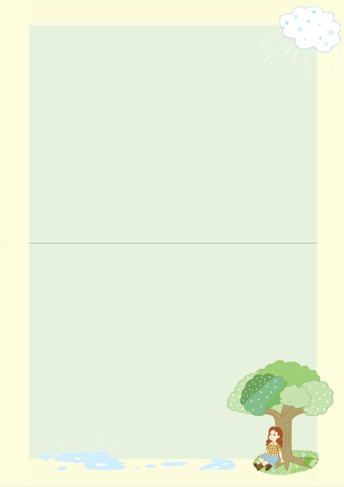
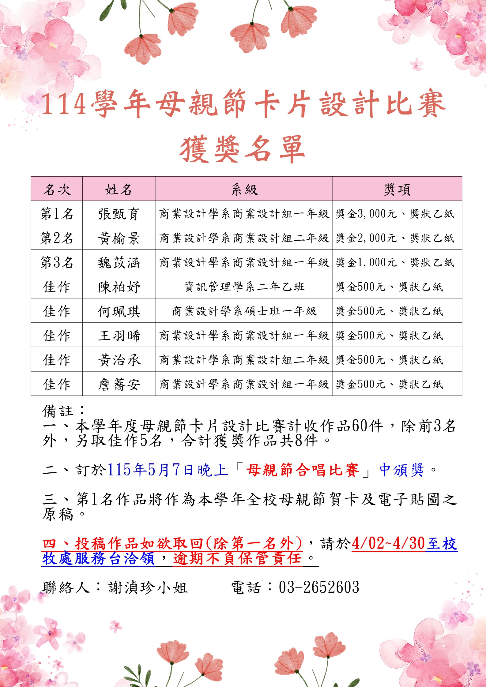

Mother's Day Card
EDITORIAL / DESIGN CONCEPT
「愛是無聲的灌溉，讓幼苗能成為他人的蔭蔽。」
這份作品的核心概念是「灌溉」。每個人最初都是一株脆弱的小苗，而媽媽就像那位不辭辛勞、日復一日為我們澆水的人，陪伴我們成長，直到我們能夠獨立站穩。整體以「成長與回饋」為主軸，將母愛比擬為滋養生命的水。 在視覺上，我選擇了美式風格，這種線條帶有一種跨越國界的親切感，希望祝福能被更多人理解。畫面中深紅髮色的女性，則是我對母親形象的投射，也是設計中最具情感溫度的靈魂。

★ FRONT VIEW // 正面以「Your love helps me grow」為題，呈現幼苗在愛中成長茁壯。

★ BACK VIEW // 曾經被灌溉的小苗已成長為大樹，現在換我們為媽媽遮風擋雨。

★ RECOGNITION // 榮獲 114 學年中原大學母親節卡片設計比賽佳作。